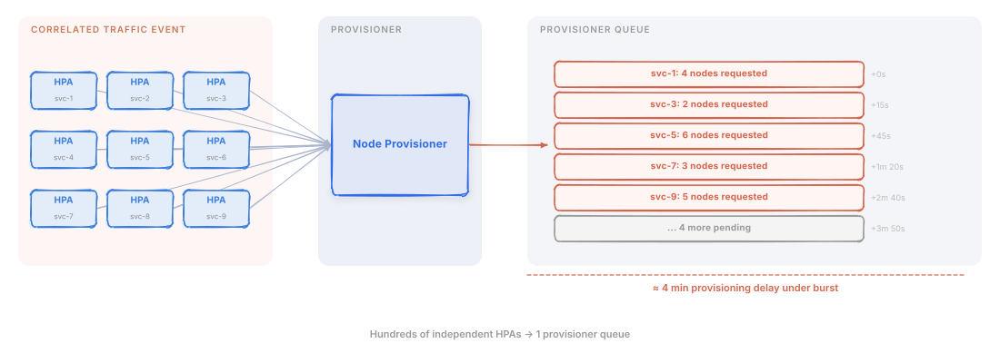
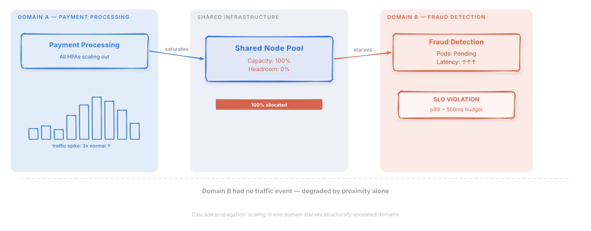
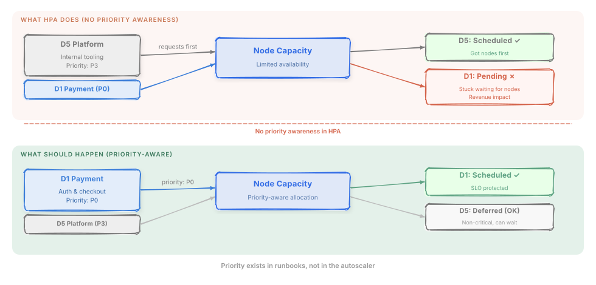

Three ways that conventional per-service autoscaling breaks down at 100,000 pods, ~1,550 applications, and five shared domains, and why no amount of HPA tuning makes them go away.
Failure Mode 1: The Provisioner Stampede

HPA is designed to be autonomous. Each deployment has its own HPA object, its own target utilization, its own scale-out logic. This is great for isolation. Changes to one service’s autoscaling config don’t affect others. It breaks down under coordination pressure.
When a correlated traffic event hits (a campaign launch, a viral moment, a deployment triggering retry storms) it doesn’t hit one service. It hits dozens or hundreds of services simultaneously across a domain. Every HPA fires within the same 15–30 second window. Every one of them requests new pods. Every one of those pods, if it can’t fit on existing nodes, triggers a node provisioner request.
The node provisioner handles bursts — it batches and consolidates requests. But it doesn’t prioritize between them. A batch of provisioner requests from a P3 internal tooling domain is processed with the same urgency as a batch from P0 payment authorization. Under a correlated spike, dozens of services land in Pending simultaneously, the cluster autoscaler groups them and fires provisioning requests, and provisioning latency climbs from seconds to minutes. Meanwhile, the traffic that triggered the scale-out is actively serving against undersized deployments.
I’ve measured this at scale: a correlated spike across a single domain can push end-to-end scale-out time (node provisioning plus pod startup plus readiness checks) to 3–4 minutes. That’s not a tuning problem. That’s an architectural problem. The scaling chain — HPA patches replica counts, the scheduler tries to place pods, unplaceable pods trigger the cluster autoscaler, which calls the cloud provider — has no coordination layer. No step in that chain knows that 200 services just asked for capacity simultaneously, or that the P0 payment service should get its nodes before the P3 batch job.
What makes it worse: The requests are not evenly distributed over time. They arrive in a burst, because all the HPAs fire at roughly the same time, because the traffic event hit all of them at roughly the same time. You get a thundering herd of autoscaling requests hitting a system that was designed to handle a steady trickle.
In a payments context, every minute of provisioner queue depth is a minute where payment authorization services are running at capacity without backup. Transaction failures during this window are not retryable for many payment flows. The customer sees a declined transaction and abandons the checkout. The provisioner stampede translates directly to lost revenue.
Failure Mode 2: Cascade Propagation Through Shared Node Pools

At 100,000 pods, you almost certainly have some node pool sharing across services, whether explicit (dedicated pools for specific domains) or implicit (spillover to shared capacity when dedicated pools fill). This sharing is efficient in steady state. It’s dangerous during spikes.
The cascade works like this: Domain A’s spike consumes the shared node pool. Domain B (no traffic event, just a bystander) can’t schedule pending pods. Domain B’s latency climbs. Domain B’s HPA fires. Now two domains are fighting for the same capacity simultaneously. New nodes come online 4–8 minutes later. By then Domain A’s spike has usually passed, so the scale-up that triggered the cascade was partially unnecessary.
Domain B never had a traffic event. It was a bystander. But it got degraded anyway because its node capacity was consumed by Domain A’s autoscaling response.
This is cascade propagation: a scaling event in one part of the cluster causes degradation in a structurally unrelated part. At ~1,550 applications across five domains, the opportunities for cascade are everywhere. And HPA has no model of it whatsoever. Each HPA knows only about its own deployment.
In a fintech environment, the cascade from payment processing to fraud detection is particularly dangerous. Fraud scoring runs inline with payment authorization at this company. If fraud scoring pods can’t schedule because payment processing consumed the shared pool, the choice is between processing transactions without fraud checks (regulatory exposure) or queueing auth requests until fraud capacity recovers (latency spike, checkout abandonment). Neither option is acceptable.
The number that should scare you: In a cluster with five domains sharing node pools, the higher your utilization, the more likely any spike bleeds into other domains, and it gets worse fast. At 70% average utilization, most spikes are absorbed by headroom. At 85%, nearly every spike of meaningful size triggers some cascade effect.
A cluster at this scale typically runs at 65–70% average CPU utilization (actual usage, not request-based; request-based utilization was higher, since most services over-request). That sounds like it should leave plenty of headroom, until you realize that headroom isn’t uniformly distributed across node pools. Cascade events were not edge cases.
Failure Mode 3: Domain Priority Inversion

Your P0 services have SLO budgets. Violating them has consequences: revenue impact, contractual obligations, user trust. Your P3 internal tooling does not. The distinction matters enormously during resource contention.
HPA does not know which of your services is P0 and which is P3. It doesn’t know that the nightly batch job for internal reporting should yield capacity to the payment authorization flow during a peak traffic event. It will scale both, treat both as equally urgent, and let the cluster sort it out, which means “whoever scheduled first wins.”
Priority inversion happens when a low-priority service out-competes a high-priority service for node capacity, not because the low-priority service is more important, but because it happened to request resources first, or its HPA fired slightly earlier, or its pod priority class was configured incorrectly by an engineer two years ago.
At ~1,550 applications, maintaining correct relative priority across all HPA configurations is not realistic in practice. Configurations drift. Teams change. Priority classes get copy-pasted without adjustment. The pod priority that was correct for a service at launch may be wrong today.
In financial services, priority inversion has a regulatory dimension. If a data pipeline batch job out-competes fraud scoring for node capacity during a compliance-critical window, the consequence isn’t just degraded internal tooling — it’s a potential gap in transaction monitoring that auditors will ask about. Domain priority in fintech isn’t just an operational preference; it’s a compliance requirement.
The failure signature: During resource contention, your monitoring shows Domain 5 (internal) consuming 18% of cluster capacity while Domain 1 (Payment Processing) has pods stuck in Pending. No individual configuration is wrong. The aggregate behavior is exactly backwards from your intent.
Why Tuning HPA Doesn’t Fix This
The natural response to these failure modes is to reach for the dials: tighten stabilization windows, adjust target utilization, add scale-down delays, tune cooldown periods. VPA and resource request rightsizing help with steady-state efficiency (I already had that in place). This is what most platform teams spend months doing.
It doesn’t work. Here’s why:
The stampede problem is coordination-shaped, not parameter-shaped. No combination of per-HPA stabilization windows prevents hundreds of HPAs from firing simultaneously when hundreds of services experience a correlated load increase. The root cause is that HPAs make independent decisions. Making them make slower independent decisions helps at the margins; it doesn’t solve the coordination problem.
The cascade problem is topology-shaped, not configuration-shaped. HPA doesn’t know about shared node pools. Adding podAffinity rules to avoid pool contention is operationally untenable at ~1,550 applications. The root cause is that no single HPA has visibility into what its scaling decisions do to the rest of the cluster.
The priority problem is policy-shaped, not threshold-shaped. Pod priority classes help. Preemption will evict lower-priority pods when a high-priority pod is stuck in Pending. But it’s reactive and pod-scoped: it only kicks in after scheduling has already failed, and it has no concept of domains. When Domain 1 is under load and Domain 5 has excess capacity, you want to proactively reallocate, not wait for Domain 1 pods to fail scheduling first.
The pattern is consistent: HPA’s failure modes at scale are structural, not parametric. You can’t tune your way out of an architectural mismatch.
To be fair: combining HPA with PriorityClasses, node autoscaler batching, and a priority-weighted rules engine gets you most of the way — likely 60–70% of the target improvement. For many organizations, that’s enough. The remaining gap is the gap between four nines and five nines of availability. The structural failures described above — stampedes, cascades, priority inversions — are tail events. They might happen a handful of times per year. But at five nines, your entire annual error budget is about five minutes. A single four-minute provisioner stampede during peak checkout consumes most of it. That’s the gap where learned, proactive coordination earns its complexity cost.
What the Right System Needs
The failures above define the requirements. Working backwards from each one:
For the stampede: A coordination layer that batches and prioritizes scaling requests before they hit the provisioner. Rather than hundreds of simultaneous “I need more capacity” signals, the system should produce one coordinated “cluster needs N nodes distributed as follows” signal.
For cascade: Cluster-wide resource awareness. The system needs to know, at the moment it makes a scaling decision for Domain A, what impact that decision has on available capacity for Domains B through E.
For priority inversion: A first-class representation of domain priority that is continuously enforced, not configured once and forgotten. During contention, the system should actively protect P0 domains, pulling budget from P3 domains if necessary.
For all of the above, proactively: A system that acts on predicted future state rather than observed current state. By the time a spike is visible in CPU metrics, it’s already late. A proactive system sees traffic arriving in the forecast and prepares capacity before the spike lands.
One more requirement, less obvious: any system with this much coordinated control also needs coordinated safety. Circuit breakers, rollback triggers, human override. A system that can reallocate budget across five domains can also cause cluster-wide damage if it gets it wrong. I’ll cover the safety design in Post 8.
These are the requirements that drove the HiRL-Scale design. The next post explains the architectural pattern that addresses them: hierarchical reinforcement learning with a Commander and Soldiers.
One honest caveat: proactive systems only win when the forecast is good. When the forecast is wrong (predicting a spike that doesn’t materialize, or missing one that does) a proactive system can make worse decisions than a reactive one, because it moved budget before seeing the evidence. I’ll get into how I handle that in Post 4. It’s not fully solved.